Activity: Splitting and reusing a path
This activity guides you through splitting a path and reusing the path to create separate bundles.
Click here to download the activity file.
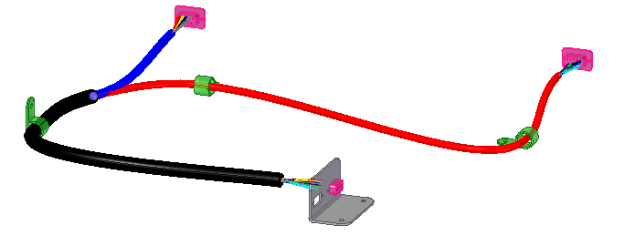
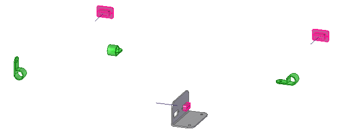
Open the path_reuse.asm assembly file.
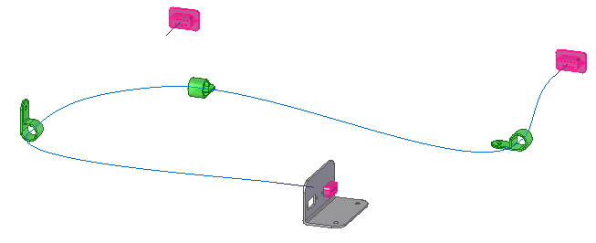
Click Tools tab→Environs group→Electrical Routing command .
The system displays the Harness Design environment. The ribbon contains the commands you use to create wire harness conductors (wires, cables, or bundles).
You will use PathFinder for most of this activity.
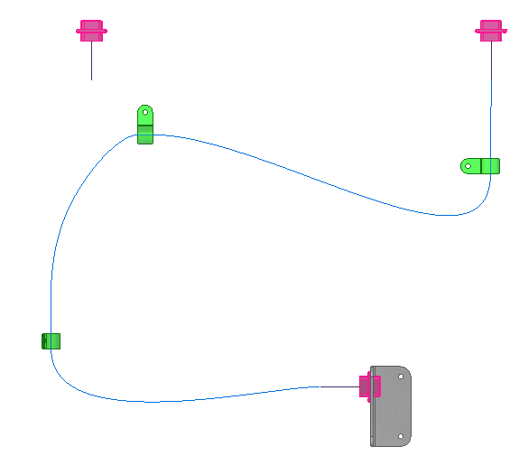
Press Ctrl+T to align the view with the Top view.
Click the Home tab→ Paths group→ Split Path button  .
.
Click the highlighted edit point shown to split the path.
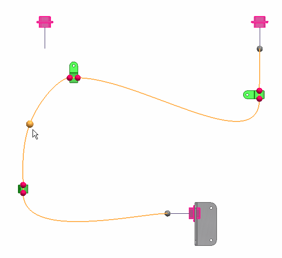
Notice there are now two entries in the Paths node of PathFinder.
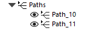
Click the Home tab→Paths group→Path button .
On the Path command bar, set the Locate Filter option to Endpoint, and then click the end point shown.
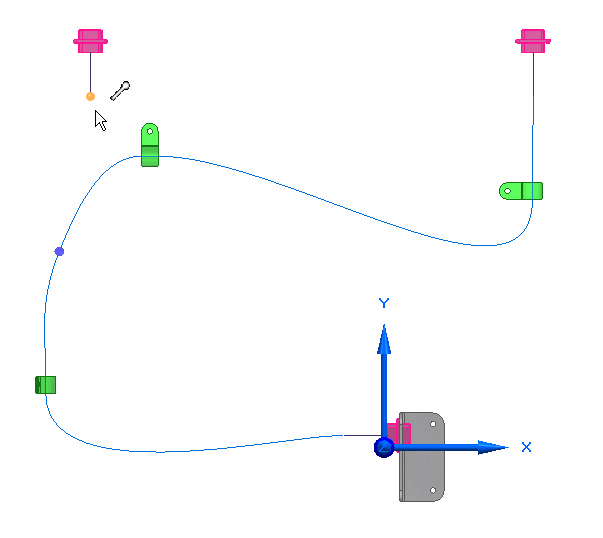
Click the highlighted end point to define the end point for the new path.
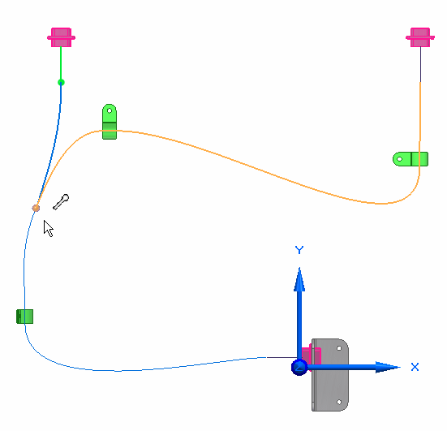
Click to place the path end point.
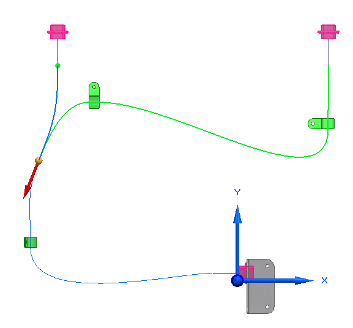
With the arrow pointing downward, tangency is created between the path you are creating and the highlighted path.
If the arrow is pointing upward, as shown below, you need to move the end of the path you are creating to establish tangency between the two paths.
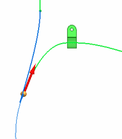
To do this:
-
Click the Accept button on the command bar.
-
Click the path as shown in the illustration.
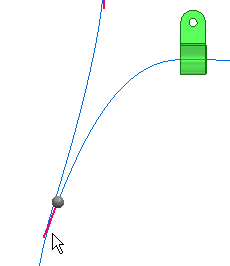
-
Drag the end of the path above the endpoint of the path as shown.
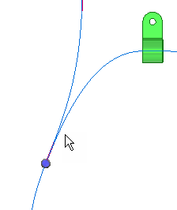
On the Path command bar, click the Accept button, and then click Finish.
On the Path command bar, click Cancel .
Notice that there are now three entries in the Path node of PathFinder.
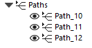
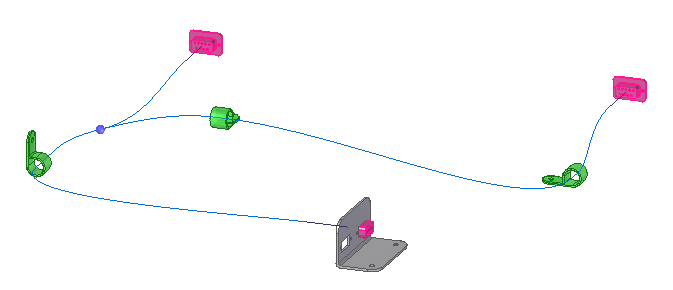
Press Ctrl+I to align the view with the Isometric view.
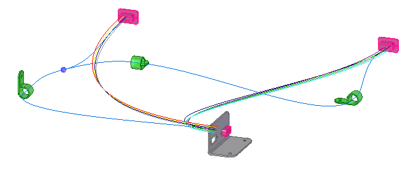
Right-click the Wires node in PathFinder, and then, on the context toolbar, click the Show button .
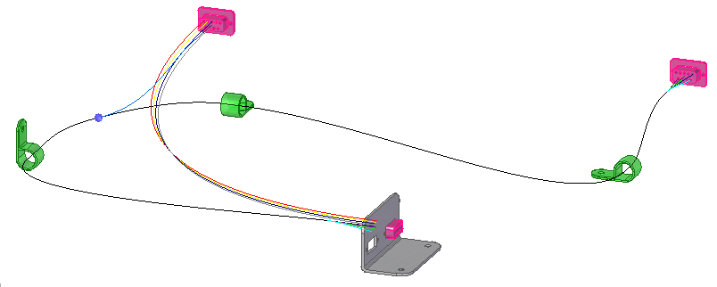
Click the Home tab→Harness group→Bundle command .
Drag a box around 9PinWallMount.par2, as shown in the illustration, to select the wires to include in the bundle.
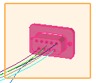
Click Accept.
Select the Use Existing Path button
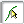
on the command bar.Click near the end point of the path as shown in the illustration to define the first path.
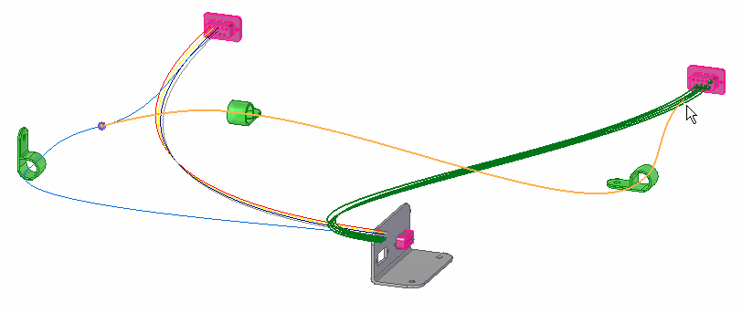
Click near the end point of the path as shown in the illustration to define the next path.
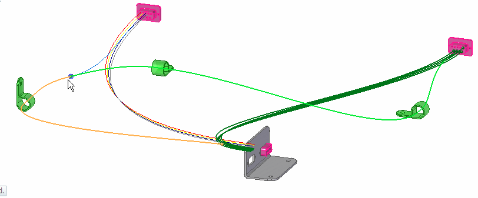
Click Accept.
Click Preview, and then click Finish.
On the Bundle command bar, click Cancel.
Expand the first Bundle entry and notice it contains wire5 through wire9.
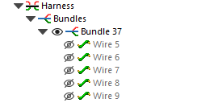
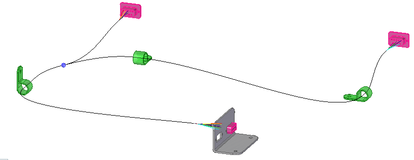
Click the Home→Electrical Routing→Bundle command .
Drag a box around 9PinWallMount.par1, as shown in the illustration, to select the wires to include in the bundle.
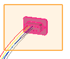
Click Accept.
Select the Use Existing Path button on the command bar.
Click near the end of the existing path shown in the illustration to define the first path.
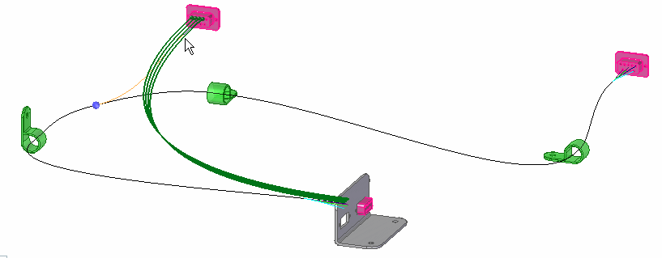
Click near the end of the existing path shown in the illustration to reuse the path to define the second path.
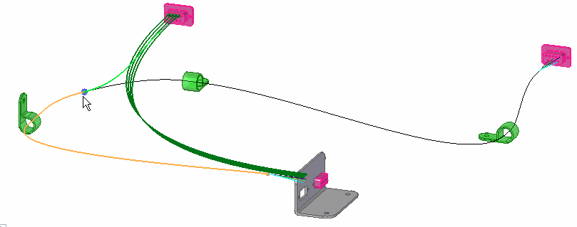
Click Accept.
Click Preview, and then click Finish.
On the Path command bar, click Cancel.
Expand the second Bundle entry and notice it contains wire1 through wire4.
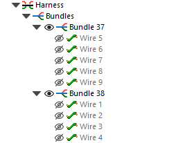
Expand the last Bundle entry and notice that a third bundle is created that contains the other two bundles.
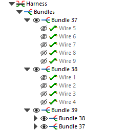
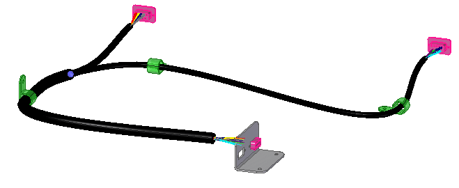
Click the Home tab→Select group→Select Tool button  .
.
In PathFinder, right-click the Harness entry to display the shortcut menu.
On the shortcut menu, click Create Physical Conductor.
The system processes for a few seconds, then solid bodies are created for the harness conductors.
Notice that the diameter of one bundle is larger than the other two bundles because it contains the other two bundles.
Right-click the bundle shown in the illustration, and then click Properties.
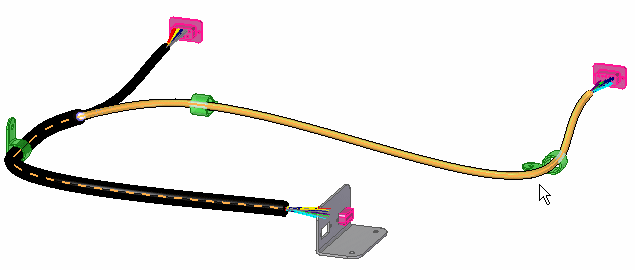
On the Properties dialog box, set the Color to Red., and then click OK.
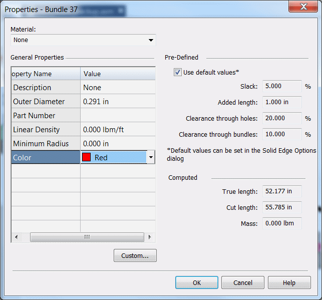
Click in the graphic window to update your change.
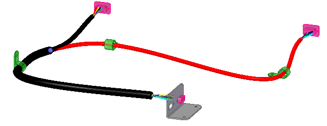
Right-click the bundle shown in the illustration, and then click Properties.
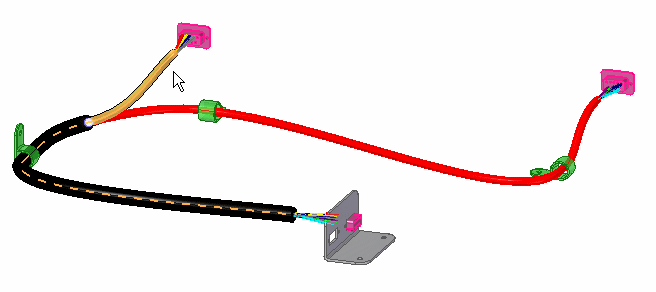
On the Properties dialog box, set the Color to Blue, and then click OK.
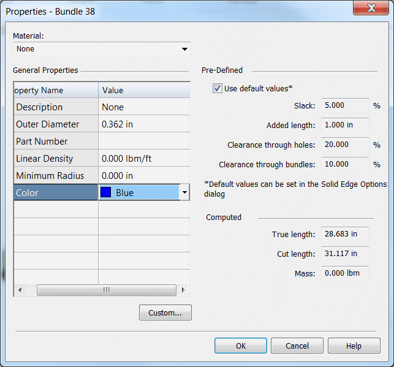
Click in the graphic window to update your change.
Click the Tools tab→Close group→Close Electrical Routing button .
On the Quick Access toolbar, click the Save button to save the document .
Close the part.